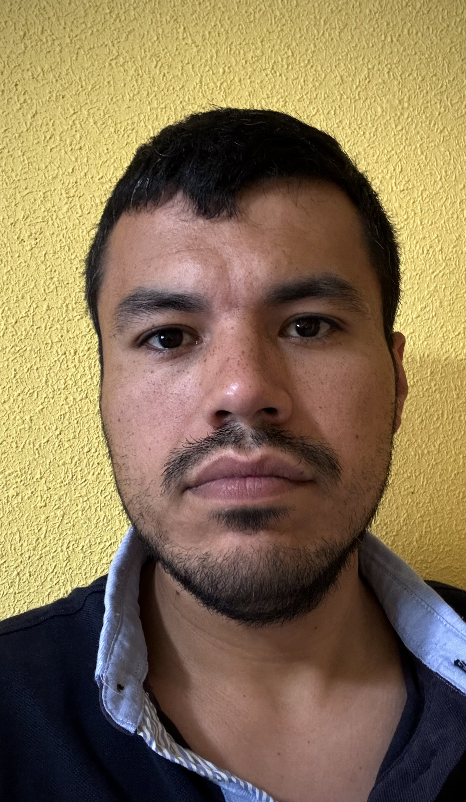

DATOS PERSONALES |
|
|  |
NOMBRE:Andrés Felipe
APELLIDOS:González Gómez FECHA DE NACIMIENTOS:22-Diciembre-1992 TELÉFONO:6xxxxxxxx |
FORMACIÓN |
|
|
TÍTULO:
ESPECIALIDAD: CENTRO: TÍTULO: ESPECIALIDAD: CENTRO: |
Grado Superior en Desarrollo de Aplicaciones Multiplataforma.
Back-End UNIR FP Grado Superior de Hostelería y Restauración. Cocina, sala y administración de negocios hosteleros Escuela de Hostelería Toledo |
ESPERIENCIA PROFESIONAL |
|
|
EMPRESA:
PERIODO: PUESTO: EMPRESA: PERIODO: PUESTO: EMPRESA: PERIODO: PUESTO: |
Restaurante El Paraguas
Septiembre-2019/Actualidad Dirección Cervecería Tropecietos Agosto-2015/Agosto-2019 Dirección Restaurante Zalacaín Septiembre-2012/Agosto-2015 Jefe de Rango |
IDIOMAS |
|
|
IDIOMA:
NIVEL: IDIOMA: NIVEL: |
Inglés
C1 (ertificado oficial Cambridge) Español Lengua Materna |